| Wave | Cohort level | N | Mean | SD | Man | Women | Others |
|---|---|---|---|---|---|---|---|
| Wave 1 | Primary | 406 | 11.85 | 0.56 | 195 | 191 | 20 |
| Secondary | 440 | 14.79 | 0.80 | 226 | 195 | 19 | |
| Total | 846 | 13.38 | 1.63 | 421 | 386 | 39 | |
| Wave 2 | Primary | 319 | 12.83 | 0.55 | 161 | 145 | 13 |
| Secondary | 343 | 15.76 | 0.75 | 177 | 158 | 8 | |
| Total | 662 | 14.35 | 1.61 | 338 | 303 | 21 |

Market justice, meritocracy & deservingness
Agenda & work in progress
Juan Carlos Castillo, Andreas Laffert &
Tomás Urzúa
Department of Sociology, University of Chile
Freie Universität Berlin - April 2026
Contents
- The project
- Paper market justice in pensions
- Paper factorial invariance of merit scale
- Latent Class Analysis of merit scale
Contents
- The project
- Paper market justice in pensions
- Paper factorial invariance of merit scale
- Latent Class Analysis of merit scale
Project

ANID/FONDECYT N°1250518 2025-2028 - Market Justice and Deservingness of Social Welfare
Objective: Analyze market justice preferences in Chile, their evolution over time, and their relation to welfare deservingness
Main argument: Chile’s highly commodified welfare system strengthens meritocratic deservingness beliefs, thereby increasing preferences for market justice relative to less commodified contexts
Research design:
- Comparative and longitudinal data analysis
- Original survey
- Survey experiments
- Legislative debates on pensions
Team
Juan Carlos Castillo (PI)
Andreas Laffert (RA)
Tomás Urzúa (RA)
René Canales (RA)
Agenda
Peer-reviewed Articles
- Castillo, J. C., Canales Sellés, R., Laffert, A., & Urzúa, T. (2026). Justification trajectories for pension inequality in Chile (2016–2023): the role of social class and beliefs in meritocracy. Frontiers in Sociology, 11, 1771856. https://doi.org/10.3389/fsoc.2026.1771856
Castillo, J. C., Laffert, A., Carrasco, K., & Iturra-Sanhueza, J. (2025). Perceptions of inequality and meritocracy: their interplay in shaping preferences for market justice in Chile (2016–2023). Frontiers in Sociology, 10, 1634219. https://doi.org/10.3389/fsoc.2025.1634219
Castillo, J. C., Salgado, M., Carrasco, K., & Laffert, A. (2024). The Socialization of Meritocracy and Market Justice Preferences at School. Societies, 14(11), 214. doi.org/10.3390/soc14110214
Forthcoming
- Pensions’ market justice and meritocracy: A structural equation modeling approach. Andreas Laffert, Tomás Urzúa, Juan Carlos Castillo & René Canales.
Stability and comparability of meritocratic beliefs in school-age students: A measurement invariance approach across time and cohorts. Andreas Laffert, Juan Carlos Castillo, René Canales, Tomás Urzúa & Kevin Carrasco. Submited.
Inequality and deservingness in higher education in Chile. A conjoint survey experiment. Juan Carlos Castillo, Andreas Laffert, René Canales & Tomás Urzúa.
Contents
- The project
- Paper market justice in pensions
- Paper factorial invariance of merit scale
- Latent Class Analysis of merit scale
The problem
- Privatization and marketization of public goods, welfare policies, and social services (Gingrich, 2011; Streeck, 2016)
- Changes in the institutional architecture of the welfare state; expansion of market logics (Busemeyer & Iversen, 2020; Ferre, 2023)
- This economic order is reflected in a specific moral economy and policy feedback dynamics (Campbell, 2020; Fernandez & Jaime-Castillo, 2013; Mau, 2015)
Market justice preferences (Busemeyer, 2015; Castillo et al., 2025; Koos & Sachweh, 2019; Lindh, 2015)
The Chilean case
- Economic growth alongside high inequality (Flores et al., 2020; Llorca-Jaña & Miller, 2021)
- Rigid relative mobility and strong closure at the top (López-Roldán & Fachelli, 2021; Torche, 2014)
- Deep privatization and commodification of social reproduction domains, combined with strong state dependence (Boccardo, 2020; Madariaga, 2020)
- Pensions: an individual capitalization system administered by private pension funds (AFPs); covers ~11 million contributors, but 27% of the labor force remains excluded due to informality (Superintendencia, 2025)
- Pension-related social conflict (Somma et al., 2021) and contested system legitimacy (“not with my money”) (Canales Cerón et al., 2021; Castillo et al., 2025)
Market justice preferences
Lane (1986): market justice vs. political justice
Normative beliefs that legitimize the idea that access to essential social services—such as healthcare, education, or pensions—should be determined by market-based criteria (Lindh, 2015, p. 895)
Measurement: assessing whether individuals consider it fair that access to these services depends on income (Castillo et al., 2025; Kluegel et al., 1999; Lindh, 2015)
Factors associated with market justice
Individual
- Socioeconomic status—income, education, and occupation (Busemeyer & Iversen, 2020; Koos & Sachweh, 2019; Lindh, 2015; Svallfors, 2007)
- Perceptions of inequality and meritocracy (Castillo et al., 2025)
- Economic conservatism/liberalism (Lee & Stacey, 2024)
Contextual
- Social spending (Busemeyer, 2015; Busemeyer & Iversen, 2020; Immergut & Schneider, 2020)
- Economic inequality (Koos & Sachweh, 2019)
- Degree of privatization and market regulation (Koos & Sachweh, 2019; Lindh, 2015)
This study
Analyze the relationship between social class and preferences for market justice in pensions in Chile, and how these evolve over time
Examine the role of meritocracy in shaping the relationship between class and preferences for pension market justice
Hypotheses
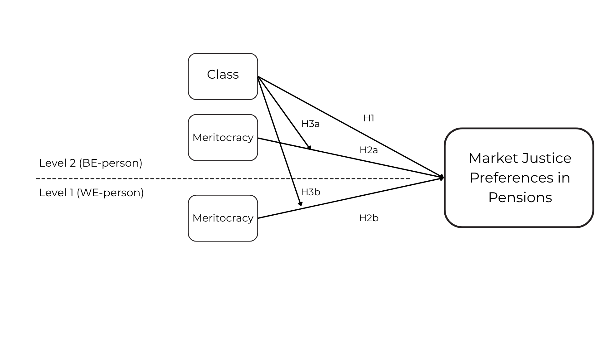
Methodology
Data
ELSOC (COES): a representative panel survey of the urban adult population in Chile, based on a probabilistic, stratified, clustered, and multistage sampling design across large and small cities
Period: six waves (2016, 2017, 2018, 2019, 2022, and 2023)
Attrition 2016→2023: ~ 40%
Analytical sample (balanced 6-wave panel):
- N = 7,522 observations (level 1) nested within
- N = 1,317 individuals (level 2)
Dependent variable
- Item: ¿“It is fair that people with higher incomes have better pensions than people with lower incomes?”
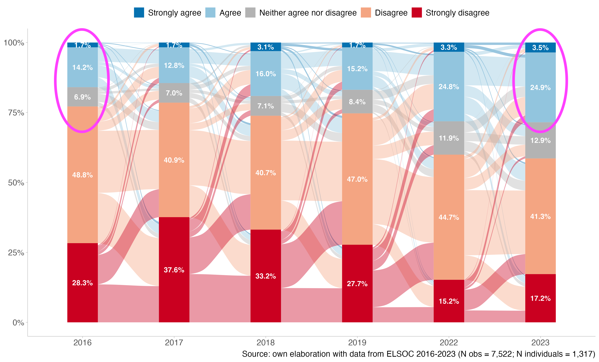
Independent variables: Level 1
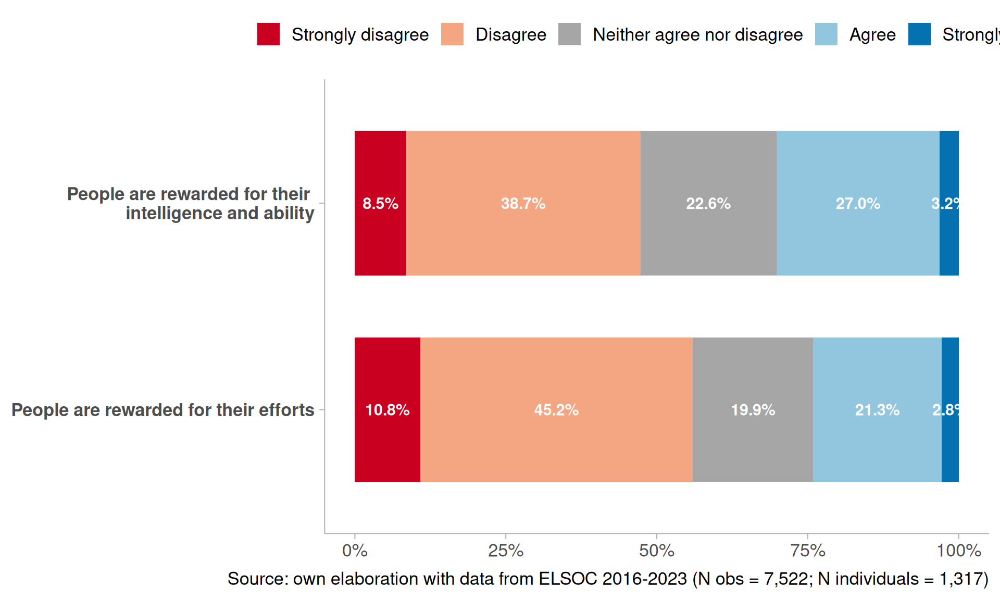
Independent variables: Level 2
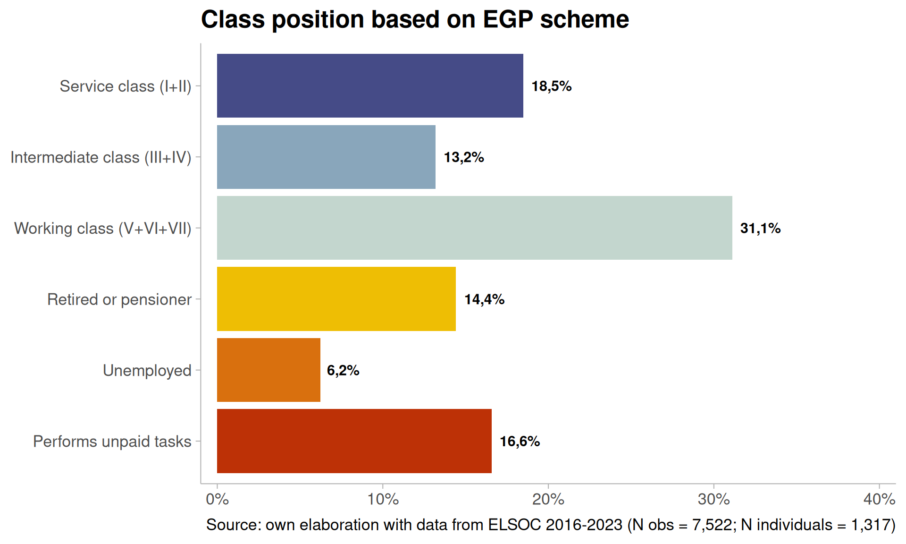
- Fixed at the first wave (i.e., time-invariant) → captures average between-person differences (BE = \(\bar X_{i}\))
Estimation strategy
Cumulative link mixed models (CLMM):
Panel structure: repeated observations (level 1) nested within individuals (level 2)
Models both within-person (WE) and between-person (BE) effects; includes random effects (intercept and time slope)
WE/BE decomposition (person-mean centering) (A. Bell et al., 2019):
- Within: \(X^{WE}_{it}= X_{it}-\bar{X}_i\)
- Between: \(X^{BE}_{i}=\bar{X}_i\)
Formally:
\[\begin{aligned} \eta_{it} = \beta_{0}+ \beta_{1}\,\text{Time}_{it} +\beta_2\,\text{Meritocracy}^{WE}_{it} +\beta_3\,\text{Meritocracy}^{BE}_{i} +\beta_4\,\mathrm{Class}^{BE}_i + \end{aligned}\]
\[\beta_5\,(\mathrm{Class}^{BE}_i\!\times\! \text{Meritocracy}^{WE}_{it}) +\beta_6\,(\mathrm{Class}^{BE}_i\!\times\! \text{Meritocracy}^{BE}_{i}) +u_{0i}+u_{1i}\,\text{Time}_{it}\\\]
Results
Models
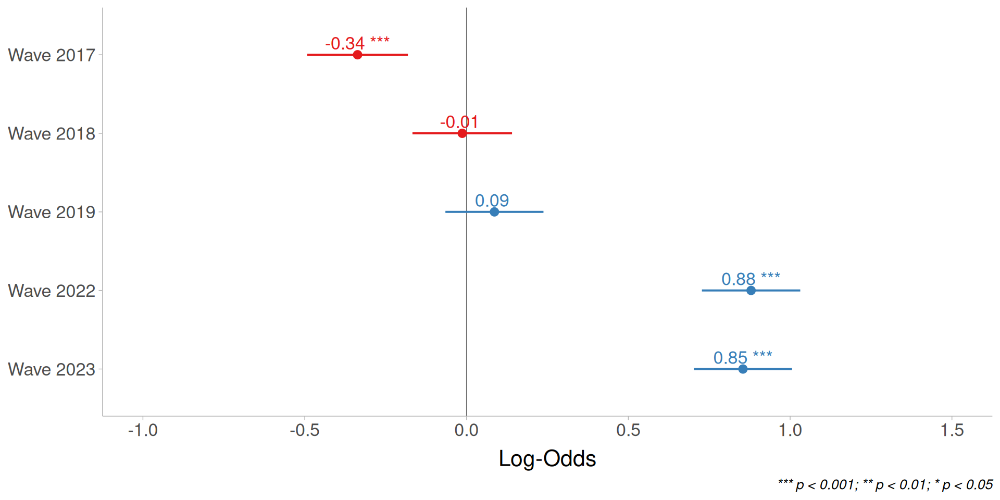
- ICC = 0.23 between, 0.77 within
Models
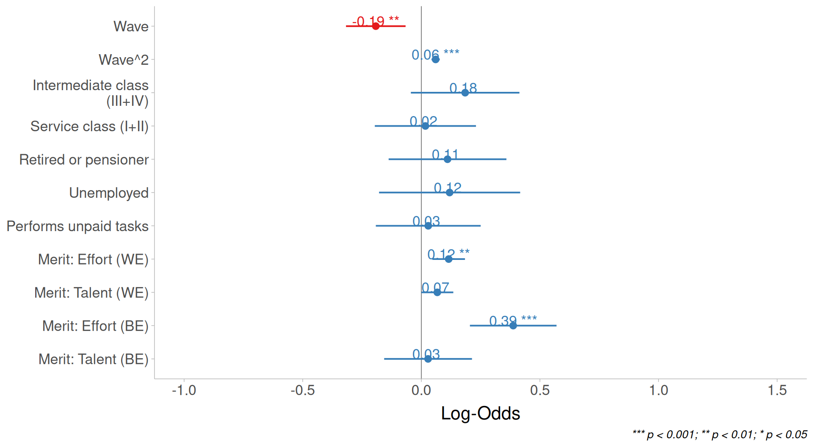
- All models control for: gender, age, educational level, and political identification
Models
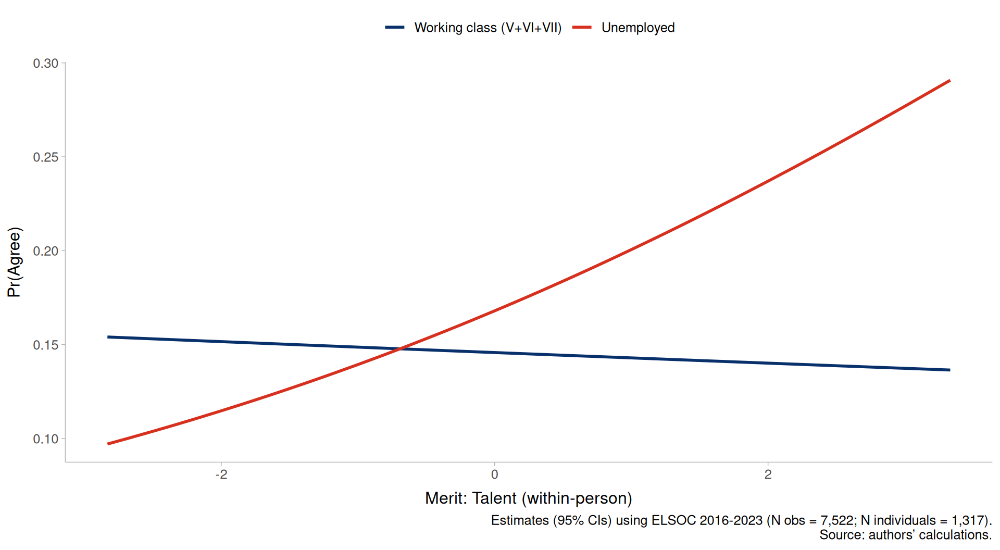
Preliminary conclusions
Time: Preferences for market justice in pensions have increased in recent years in Chile
Social class: Higher social classes don’t exhibit greater support for market justice in pensions than lower classes (H1) (Busemeyer & Iversen, 2020; Kerner, 2020; Lindh, 2015)
Meritocracy: The belief that effort is rewarded is associated with higher support for market justice in pensions (H2a and H2b) (Castillo et al., 2025)
Class × Meritocracy: There is no evidence of an amplification effect (H3a/H3b)
Caveats
No evidence of class differences in support for pension market justice, but what about a more direct measure of stratification differences?
Meritocratic beliefs show a strong and consistent effect. Yet, are measured in a highly reduced way, through effort and talent only
Next step: model meritocracy as a multidimensional construct
→ (Castillo et al., 2023)
The role of income and education
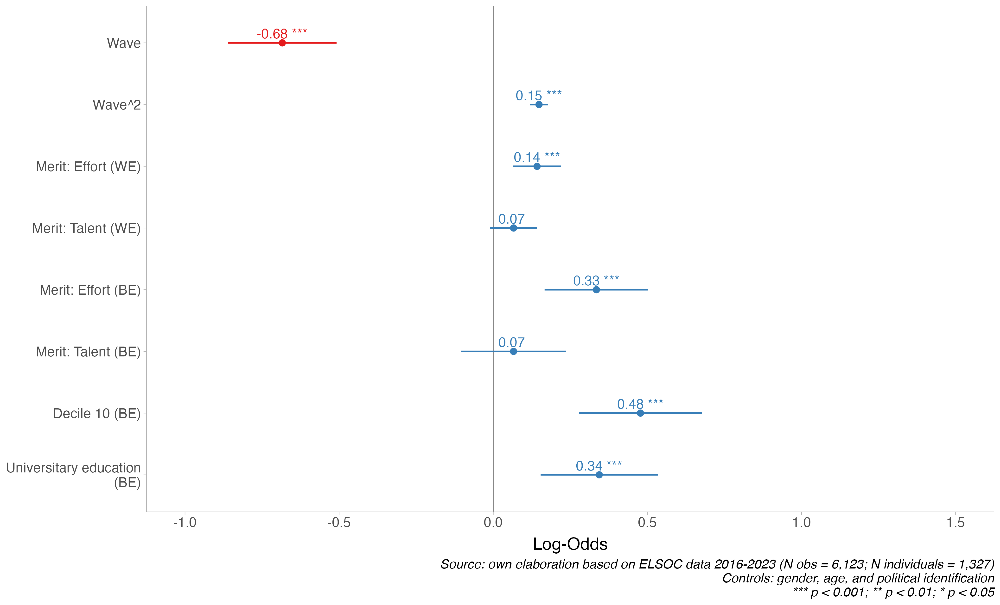
Additional analyses (SEM)
Data
EDUMERCO: Online survey (CAWI), fielded in 2025, with adult respondents from the Metropolitan Region of Chile
Non-probability sample with quota-based design
→ approximating population parameters by age, gender, education, and socioeconomic statusTotal sample: N = 3,470
Analytical sample: N = 2,557
Measures
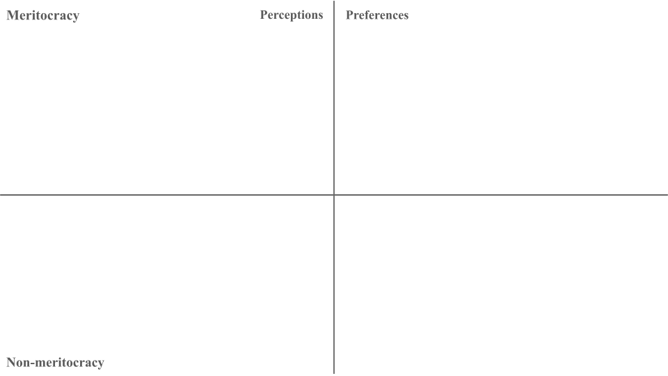
Measures
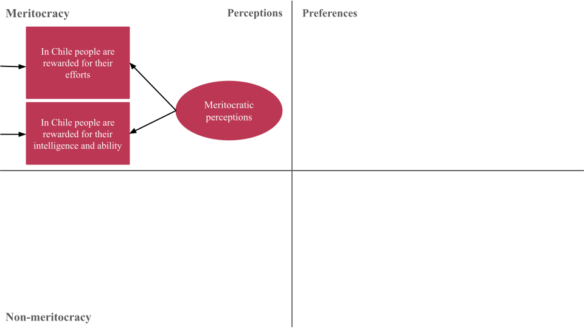
Measures
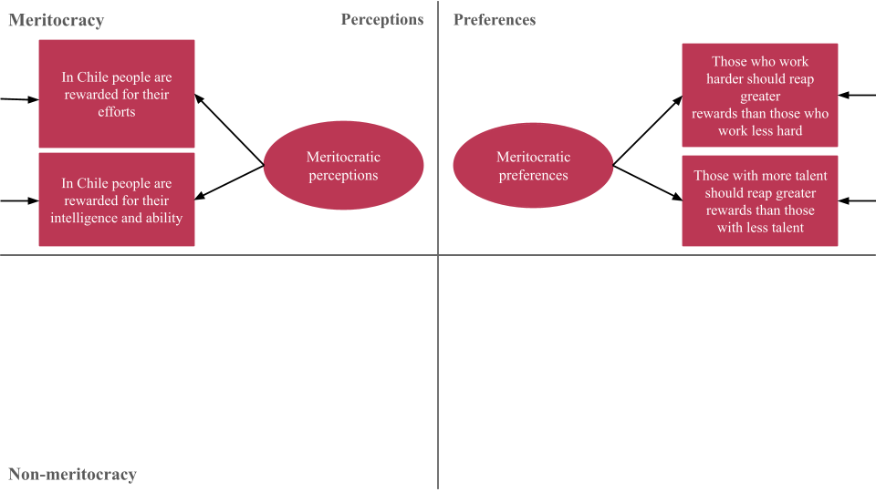
Measures
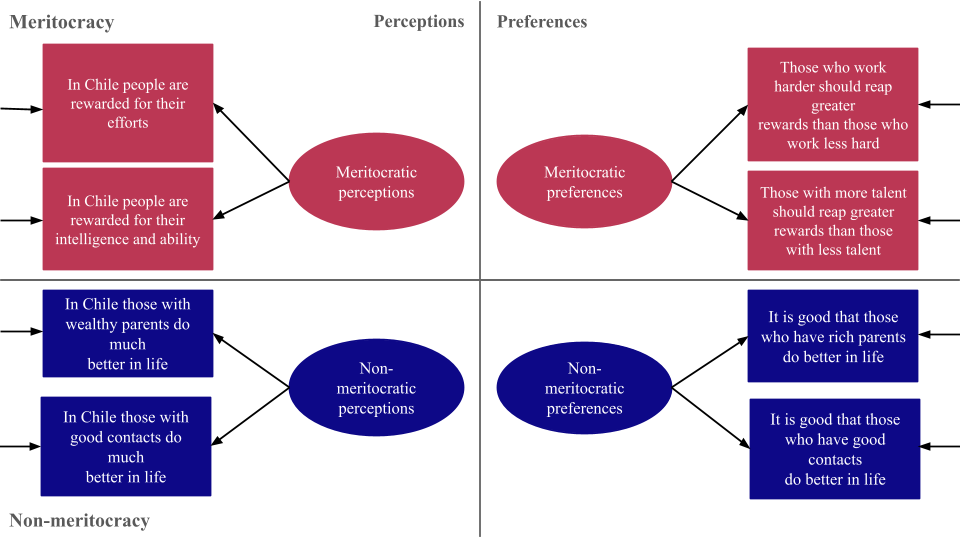
Measures
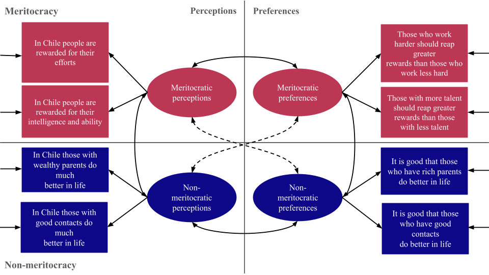
Analytical strategy
First, we estimate a Confirmatory Factor Analysis of the multidimensional meritocracy scale
→ good model fit (CFI = 0.995, TLI = 0.991, RMSEA = 0.048)Second, we estimate a Structural Equation Model
→ pension market justice regressed on latent meritocracy factors
\[ \text{MJP}_{i} = \alpha + \beta_1 \eta^{PM}_{i} + \beta_2 \eta^{PNM}_{i} + \beta_3 \eta^{PrM}_{i} + \beta_4 \eta^{PrNM}_{i} + \gamma'X_i + \varepsilon_i \]
- Estimation: WLSMV
→ appropriate for ordinal (Likert-type) data (Kline, 2023)
Results
Descriptive
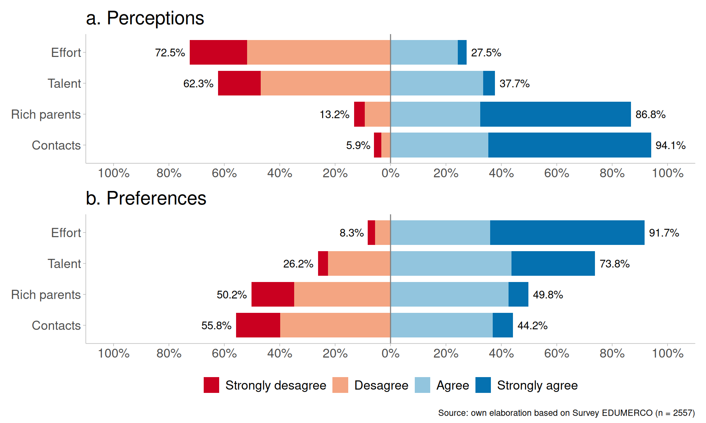
Model
Preliminary conclusions
Meritocracy in Chile: Privilege is perceived to outweigh merit, even though merit—especially effort—remains the dominant normative ideal
Measuring meritocracy: Respondents distinguish between perceptions and preferences, as well as between meritocratic and non-meritocratic principles
Meritocracy and pension market justice: Support is strongest among those willing to normalize privilege within a fair distributive order
Discussion and conclusions
Discussion and conclusions
Research agenda: The expansion of market-based welfare is reflected in public attitudes (Busemeyer & Iversen, 2020; Lindh, 2015), helping explain support for neoliberal arrangements (Mau, 2015)
Chile: Support remains minority but is rising over time, consistent with longitudinal evidence from a highly commodified welfare context marked by mixed policy feedback (Castillo et al., 2025)
Main result: Effort-based meritocratic perceptions are positively associated with pension market justice, both between and within individuals
Extension: With a multidimensional measure of meritocracy (Castillo et al., 2023), support is highest among those who normatively accept non-meritocratic advantage, while perceiving society as non-meritocratic lowers it
Next steps
Market justice measurement: We are refining the measure and extending it to additional welfare domains
Class measurement: Despite the null findings, we do not abandon the argument that objective stratification shapes these preferences; we will test alternative measures of class and inequality
Next analyses: We will further examine how meritocratic deservingness relates to market justice in pensions, health, and education using latent class analysis and comparative ISSP data, with attention to institutional and economic cross-national differences
Thank you for your attention
- Github project: https://github.com/jus-mer

Contents
- The project
- Paper market justice in pensions
- Paper factorial invariance of merit scale
- Latent Class Analysis of merit scale
Research problem
Context and motivation
Meritocracy: a distributive system where rewards are expected to reflect individual effort and ability rather than social origin or inherited privilege (D. Bell, 1972; Young, 1958)
Meritocratic beliefs help legitimize inequality (Castillo et al., 2019; García-Sierra, 2023; Heuer et al., 2020; Jonathan J. B. Mijs, 2021; Sandel, 2020)
- They shape how inequality is perceived and justified
- They are reinforced through social institutions
Context and motivation
Schools are key sites for the formation and development of meritocratic beliefs
- Cultural ideal: effort, achievement, self-improvement, and education as routes to mobility (Chauvin et al., 2026; Darnon, Wiederkehr, et al., 2018; J. Mijs, 2016)
- Institutional life: grading, tracking, selection, awards, and credentials (Darnon et al., 2023; Resh & Sabbagh, 2017; Traini, 2022)
- Non-meritocratic elements: structural advantages and dual consciousness (Goudeau & Cimpian, 2021; C. Liu & Wang, 2025; Tang et al., 2025)
- Consequences within and beyond school: greater legitimation of unequal outcomes, from grades to income inequality and lower support for redistribution (Batruch et al., 2022; Castillo et al., 2024; Darnon, Smeding, et al., 2018; Wiederkehr et al., 2015)
Research gaps and contributions
The measurement of meritocratic beliefs remains limited in school-based research
Existing scales are still narrow: BSM (Wiederkehr et al., 2015) focuses mainly on effort and opportunity, while Chauvin et al. (2026) centers on perceived meritocracy and blends school with broader social meritocracy
These limitations matter because measurement shapes the validity and interpretation of findings
We address this gap with a multidimensional approach (Castillo et al., 2023) that distinguishes perceptions from preferences, and meritocratic from non-meritocratic principles
Research gaps and contributions
Beyond factorial validity, we test measurement stability across school stages and over time
Measurement invariance is necessary for valid group and longitudinal comparisons (Chen, 2007; Putnick & Bornstein, 2016)
These cohorts capture distinct stages of adolescence, when beliefs about justice and inequality become more complex and school sorting more salient (Henry & Saul, 2006; Resh & Sabbagh, 2014)
This lets us assess whether meritocratic beliefs remain stable or shift as students encounter the limits of meritocratic ideals (Tang et al., 2025)
This study
We ask whether students distinguish between meritocratic and non-meritocratic principles, and between perceptions (“what is”) and preferences (“what should be”)
We also ask whether these dimensions can be measured comparably across age cohorts and over time
\(H1\): Meritocratic beliefs are best represented by the four factors
\(H2–H3\): This four-factor model is invariant across cohorts and longitudinally within students
Method
Participants and procedure
Panel Survey on Education and Meritocracy (EDUMER), using the 2023 and 2024 student waves
CAWI surveys administered to primary and secondary school students from 9 schools in the Metropolitan and Valparaíso regions of Chile
Wave 1 (N = 846): 386 girls, 421 boys, and 39 identifying as other; \(M_{age}\) = 13.4, \(SD_{age}\) = 1.6
Wave 2 (N = 662): 303 girls, 338 boys, and 21 identifying as other; \(M_{age}\) = 14.4, \(SD_{age}\) = 1.6
Attrition: 22% (78% retention), mainly due to school absenteeism and school transfers
Measures
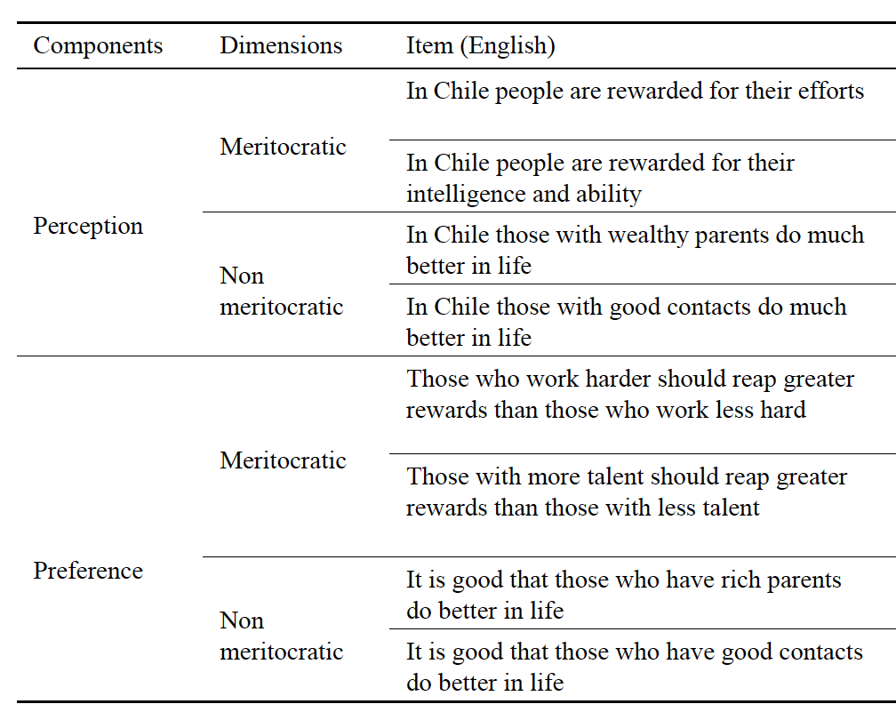
Measures
- Cohorts: To distinguish educational level across waves in the invariance analyses, we use a cohort indicator defined at each wave (primary vs. secondary school).
Analytical strategy
Confirmatory Factor Analysis (CFA):
- A four-factor latent model estimated with WLSMV (Kline, 2023)
- Model fit cutoffs (Brown, 2015): \(\text{CFI or TLI} > 0.95\); \(RMSEA < 0.06\); nonsignificant \(\chi^2\) (\(p > 0.05\)), and \(\chi^2/df < 3\)
Analytical strategy
Measurement invariance: a set of procedures used to assess the comparability of a measurement model (Putnick & Bornstein, 2016; Van De Schoot et al., 2015)
Two types:
Procedure: four sequentially constrained, hierarchical models
- Configural (same factor structure)
- Weak (+ equal factor loadings)
- Strong (+ equal intercepts)
- Strict (+ equal error variances)
- Fit cutoffs (Chen, 2007): CFI (\(\Delta \geq -0.010\)) and RMSEA (\(\Delta \geq 0.0\))
Results
Measurement model
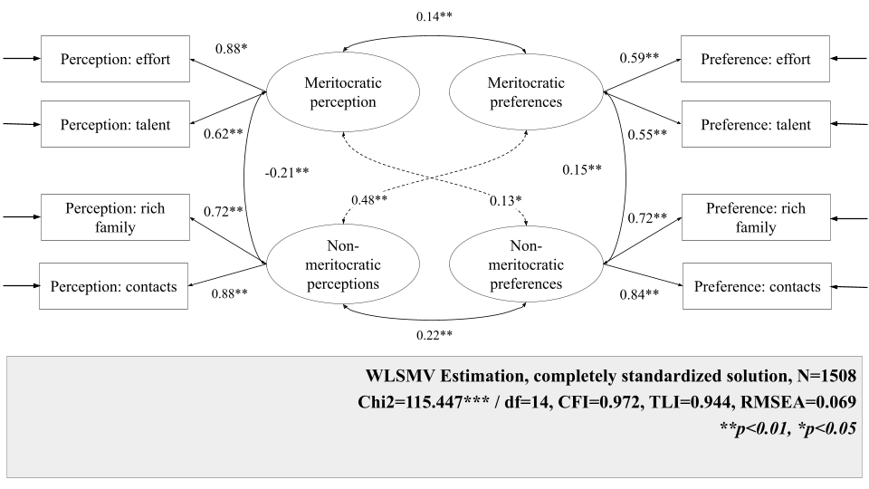
Longitudinal descriptives
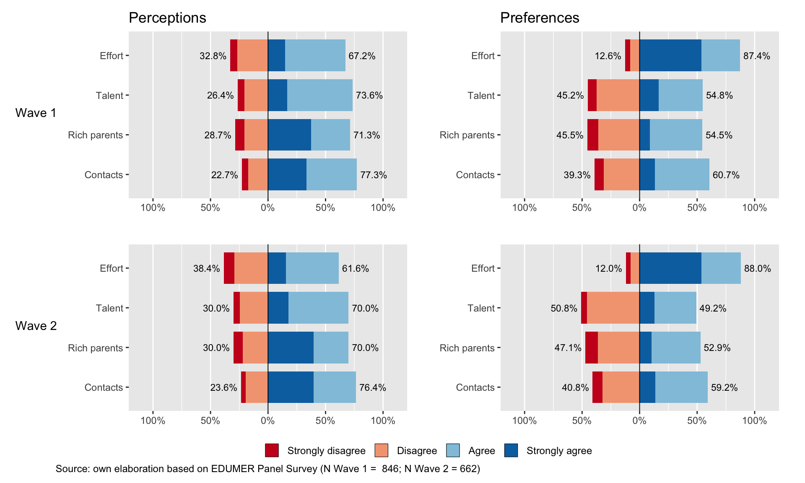
Longitudinal invariance
| Model | χ^2 (df) | CFI | RMSEA (90% CI) | Δ χ^2 (Δ df) | Δ CFI | Δ RMSEA | Decision |
|---|---|---|---|---|---|---|---|
| Configural | 117.7 (68) | 0.991 | 0.035 (0.024-0.046) | 0 (0) | 0 | 0.000 | Reference |
| Weak | 122.51 (72) | 0.990 | 0.034 (0.024-0.045) | 4.809 (4) | 0 | -0.001 | Accept |
| Strong | 128.53 (80) | 0.991 | 0.032 (0.021-0.042) | 6.02 (8) | 0 | -0.002 | Accept |
| Strict | 130.17 (84) | 0.991 | 0.031 (0.02-0.04) | 1.635 (4) | 0 | -0.002 | Accept |
Cohort descriptives
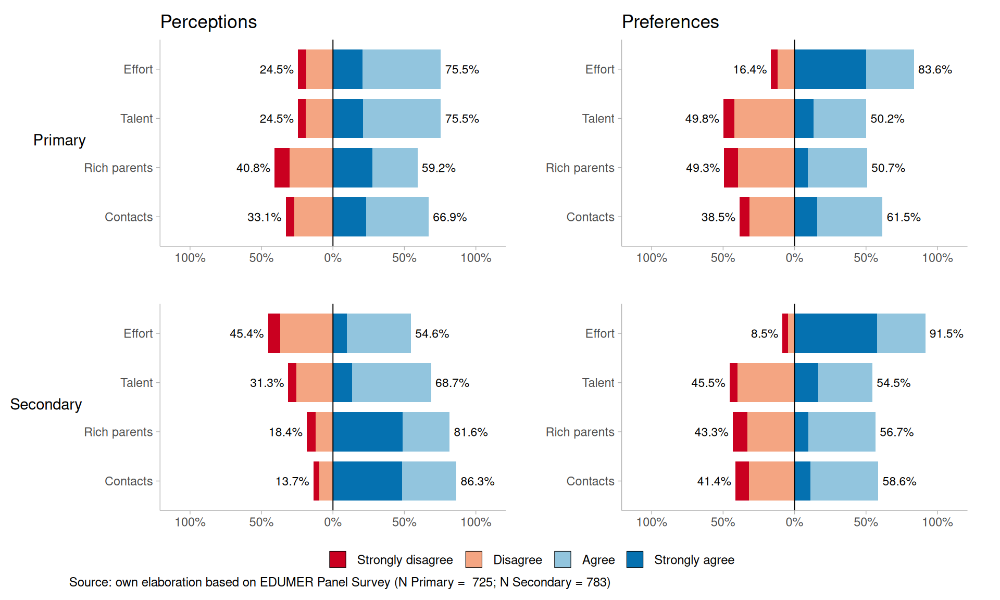
Cohort invariance
| Model | χ^2 (df) | CFI | RMSEA (90% CI) | Δ χ^2 (Δ df) | Δ CFI | Δ RMSEA | Decision |
|---|---|---|---|---|---|---|---|
| Configural | 24.95 (26) | 0.993 | 0.036 (0.009-0.057) | 0 (0) | 0.000 | 0.000 | Reference |
| Tresholds | 57.56 (42) | 0.980 | 0.049 (0.033-0.064) | 43.875 (16) *** | -0.013 | 0.013 | Reject |
| Tresholds + Loadings | 72.35 (46) | 0.973 | 0.053 (0.039-0.067) | 17.075 (4) ** | -0.006 | 0.005 | Reject |
Cross-cohort non-invariance is mainly driven by the perceived-effort item, suggesting that older students apply a more critical standard when judging whether effort is rewarded.
Discussion and conclusions
Discussion: meritocracy at schools
\(H1\) is supported: students already organize meritocratic beliefs into four distinct dimensions
They distinguish both between “what is” and “what should be,” and between merit and privilege
Merit and non-merit do not work as opposites: recognizing privilege does not eliminate support for merit (Jonathan J. B. Mijs, 2026; Tang et al., 2025)
This suggests that the link between meritocratic beliefs and inequality legitimization is likely dimension-specific (Castillo et al., 2023)
Discussion: measurement invariance
\(H2\) is supported: the scale is longitudinally stable, so within-student change over time can be interpreted substantively
- This strengthens the basis for studying developmental change in meritocratic beliefs
\(H3\) is not supported: the scale is not fully invariant across educational levels
- Perceived meritocracy seems to shift across school stages, suggesting that older students see effort as less clearly rewarded than younger students do (Tang et al., 2025)
Next steps
Future research should refine the measure and examine how these beliefs shape school experiences, inequality legitimization, and attitudes toward educational opportunity
Start from the items’ covariance structure, and assess whether their relationships form distinguishable clusters.
Contents
- The project
- Paper market justice in pensions
- Paper factorial invariance of merit scale
- Latent Class Analysis of merit scale
So far
Meritocracy as factor associated: relationships with market justice preferences, redistributive preferences and perceptions of inequality.
Measurement of meritocracy: developed scale that allows for an understanding of meritocratic beliefs from a multidimensional approach
Key findings
Meritocracy is not one-dimensional
Nor does it follow a continuous logic
Blind spots
Variable-centered instead of person-centered approaches
It is not possible to determine whether people hold different meritocratic beliefs and how they form groups based on their similarities and differences
Objective of this paper
Examine the patterns of meritocratic and non-meritocratic beliefs and identify different groups and their size based on the meritocratic beliefs configurations
Data
Dataset: EDUMERCO (2024)
Online survey (CAWI) applied to Adults in the Metropolitan Region of Chile
Sampling: Non-probability quota-based design
Analytical sample: N = 2,740
Method
Latent Class Analysis (LCA): It is a statistical method that models the relationships between observed variables based on the assumption that an unobserved categorical latent variable explains their underlying structure
LCA is specifically used for studies involving categorical or ordinal variables
Exploratory and confirmatory utility
allows for the identification of different types of groups based on the probability that they will give similar responses
allows for the testing of hypotheses regarding the number and size of existing groups in society
Parameters and estimation
Parameters
Class probability: Indicates the probability of belonging to each class and reflects the relative size of the group
Conditional response probabilities: These indicates the probability of endorsing a particular response category, given membership in a latent class. These parameters are used to interpret and label the classes.
Estimation and fit
- Bayesian Information Criteria (BIC)
- Akaike Information Criteria (AIC)
Results
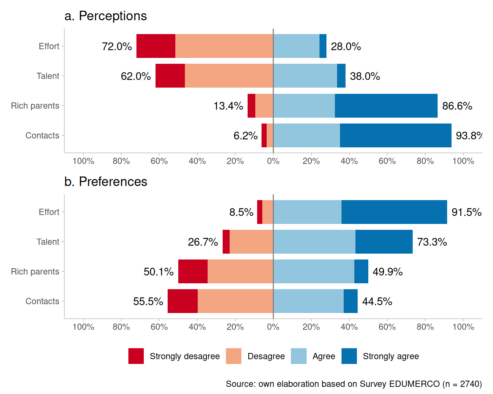
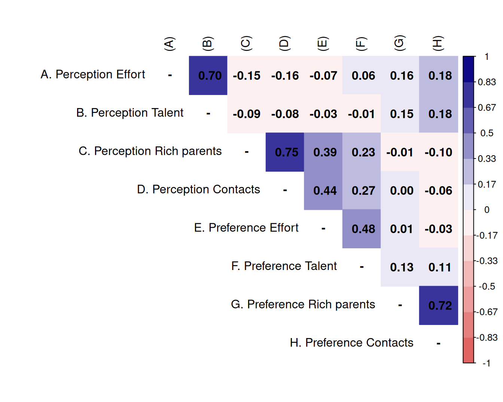
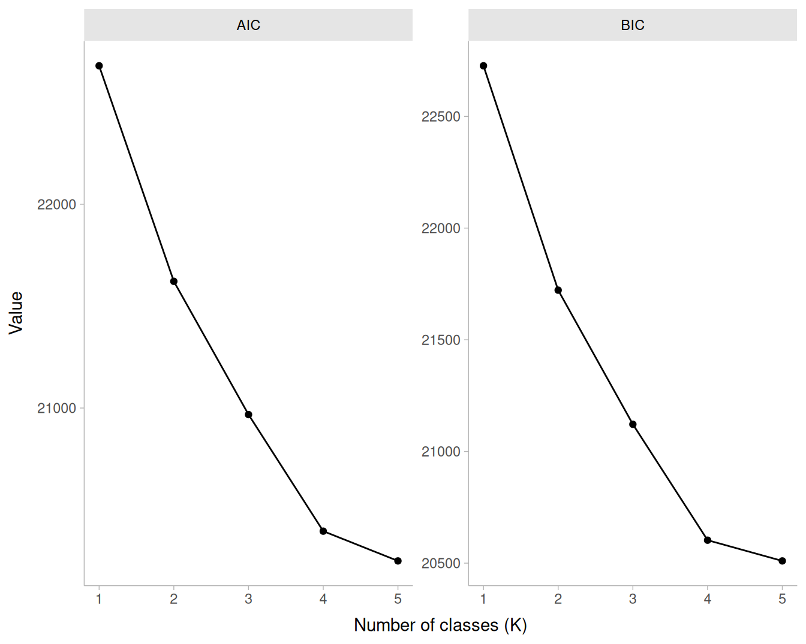
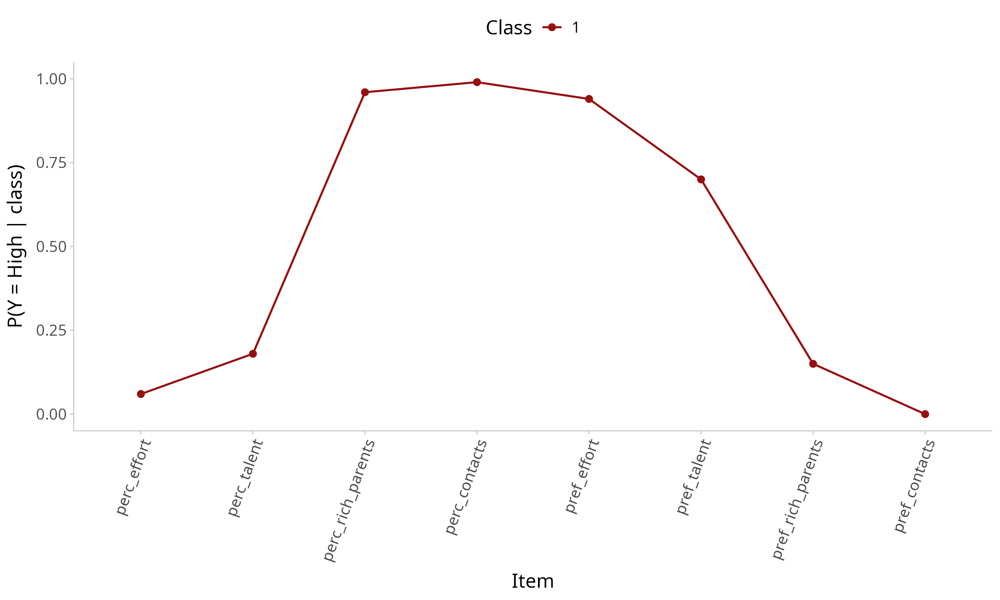
- Class 1 Critical Meritocrats (36.2%): This group is characterized by its belief in meritocracy as a moral ideal, while acknowledging that, in reality, certain privileges influence success. It does not consider the current system to be meritocratic, but it strongly advocates for it to be so
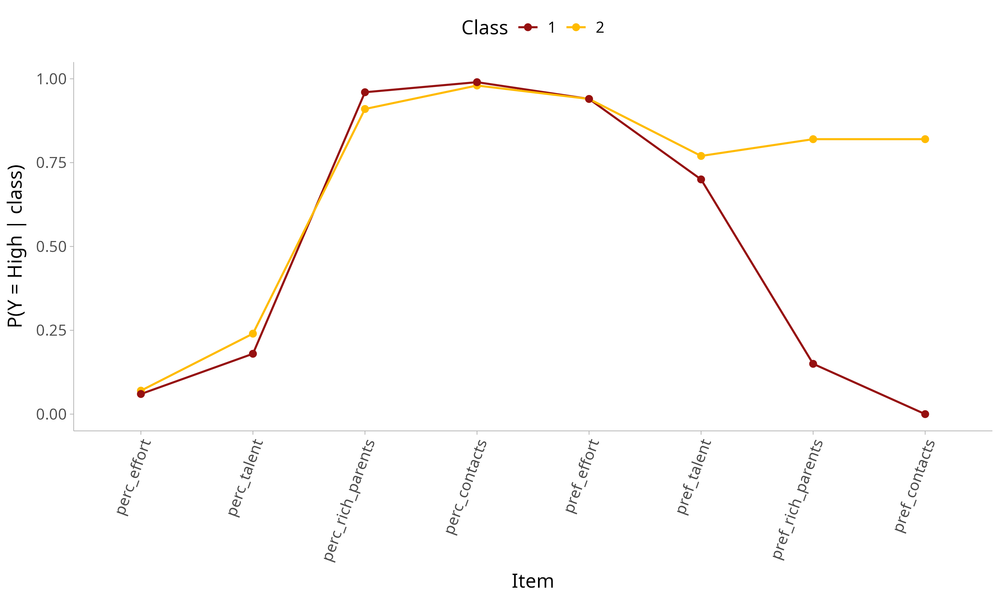
- Class 2: Anything goes (36.3%): This class combines a realistic assessment of a stratified society with a normative justification of privilege. Thus, meritocracy is not presented as an alternative to privilege; rather, the two principles coexist and are viewed as compatible foundations for the functioning of society.
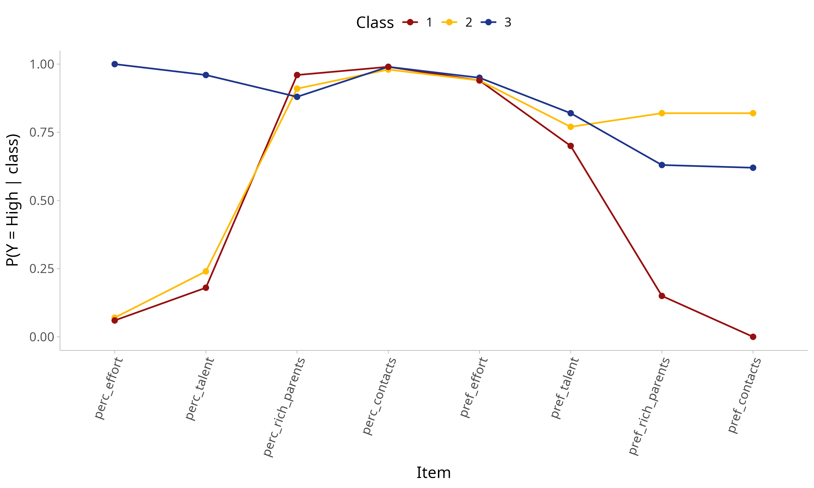
- Class 3 Structurally Aware Meritocrats (20.7%): This profile reflects a belief system in which merit and privilege operate simultaneously. They strongly support meritocracy, though they hold an ambivalent stance toward privilege: they view it as less legitimate than other groups do, but they do not reject it entirely
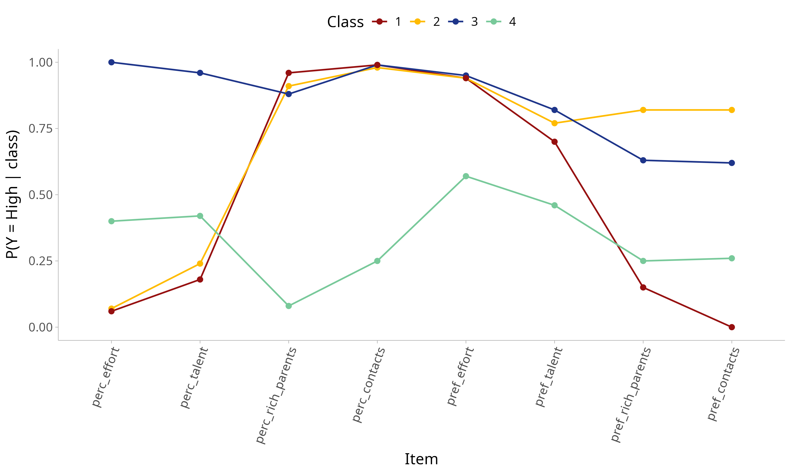
- Class 4 Neutral naives (6.8%): This group exhibits an ambivalent character as they do not strongly support meritocracy neither non-meritocracy
Next steps
- Delving deeper into the interpretation of the lessons: find a more substantive explanation for the ambivalent class and connecting the findings to the literature
- Estimate regressions using latent classes as independent variables to predict support for market-based justice in social services
References
Batruch, A., Jetten, J., Van de Werfhorst, H., Darnon, C., & Butera, F. (2022). Belief in School Meritocracy and the Legitimization of Social and Income Inequality. Social Psychological and Personality Science, 194855062211110. https://doi.org/10.1177/19485506221111017
Bell, A., Fairbrother, M., & Jones, K. (2019). Fixed and random effects models: Making an informed choice. Quality & Quantity, 53(2), 1051–1074. https://doi.org/10.1007/s11135-018-0802-x
Bell, D. (1972). On equality: I. Meritocracy and equality. The Public Interest, 29, 29–68.
Boccardo, G. (2020). 30 años de privatizaciones en Chile: Lo que la pandemia reveló. Nodo XXI.
Brown, T. A. (2015). Confirmatory factor analysis for applied research (Second edition). New York London: The Guilford Press.
Busemeyer, M. (2015). Skills and inequality: Partisan politics and the political economy of education reforms in western welfare states. Cambridge: Cambridge University Press. https://doi.org/10.1017/CBO9781107477650
Busemeyer, M., & Iversen, T. (2020). The Welfare State with Private Alternatives: The Transformation of Popular Support for Social Insurance. The Journal of Politics, 82(2), 671–686. https://doi.org/10.1086/706980
Campbell, J. L. (2020). Institutional Change and Globalization. Princeton University Press. https://doi.org/10.2307/j.ctv131bw68
Canales Cerón, M., Orellana Calderón, V. S., & Guajardo Mañán, F. (2021). Sujeto y cotidiano en la era neoliberal: El caso de la educación chilena. Revista Mexicana de Ciencias Políticas y Sociales, 67(244). https://doi.org/10.22201/fcpys.2448492xe.2022.244.70386
Castillo, J. C., Iturra, J., Maldonado, L., Atria, J., & Meneses, F. (2023). A Multidimensional Approach for Measuring Meritocratic Beliefs: Advantages, Limitations and Alternatives to the ISSP Social Inequality Survey. International Journal of Sociology, 53(6), 448–472. https://doi.org/10.1080/00207659.2023.2274712
Castillo, J. C., Laffert, A., Carrasco, K., & Iturra-Sanhueza, J. (2025). Perceptions of inequality and meritocracy: Their interplay in shaping preferences for market justice in Chile (2016–2023). Frontiers in Sociology, 10, 1634219. https://doi.org/10.3389/fsoc.2025.1634219
Castillo, J. C., Salgado, M., Carrasco, K., & Laffert, A. (2024). The Socialization of Meritocracy and Market Justice Preferences at School. Societies, 14(11), 214. https://doi.org/10.3390/soc14110214
Castillo, J. C., Torres, A., Atria, J., & Maldonado, L. (2019). Meritocracia y desigualdad económica: Percepciones, preferencias e implicancias. Revista Internacional de Sociología, 77(1), 117. https://doi.org/10.3989/ris.2019.77.1.17.114
Chauvin, B., Rauscher, C., Saidah, B., & Louvet, E. (2026). School meritocracy: A multidimensional construct? Evidence from the development of a school meritocracy scale by exploratory and confirmatory bifactor modeling. Current Psychology, 45(5), 519. https://doi.org/10.1007/s12144-026-09134-1
Chen, F. F. (2007). Sensitivity of Goodness of Fit Indexes to Lack of Measurement Invariance. Structural Equation Modeling: A Multidisciplinary Journal, 14(3), 464–504. https://doi.org/10.1080/10705510701301834
Darnon, C., Jury, M., Goudeau, S., & Portex, M. (2023). Competitive and cooperative practices in education: How teachers’ beliefs in school meritocracy are related to their daily practices with students. Social Psychology of Education, 26(6), 1789–1805. https://doi.org/10.1007/s11218-023-09824-9
Darnon, C., Smeding, A., & Redersdorff, S. (2018). Belief in school meritocracy as an ideological barrier to the promotion of equality. European Journal of Social Psychology, 48(4), 523–534. https://doi.org/10.1002/ejsp.2347
Darnon, C., Wiederkehr, V., Dompnier, B., & Martinot, D. (2018). “Where there is a will, there is a way”: Belief in school meritocracy and the social-class achievement gap. British Journal of Social Psychology, 57(1), 250–262. https://doi.org/10.1111/bjso.12214
Davidov, E., Meuleman, B., Cieciuch, J., Schmidt, P., & Billiet, J. (2014). Measurement Equivalence in Cross-National Research. Annual Review of Sociology, 40(Volume 40, 2014), 55–75. https://doi.org/10.1146/annurev-soc-071913-043137
Fernandez, J. J., & Jaime-Castillo, A. M. (2013). Positive or Negative Policy Feedbacks? Explaining Popular Attitudes Towards Pragmatic Pension Policy Reforms. European Sociological Review, 29(4), 803–815. https://doi.org/10.1093/esr/jcs059
Ferre, J. C. (2023). Welfare regimes in twenty-first-century Latin America. Journal of International and Comparative Social Policy, 39(2), 101–127. https://doi.org/10.1017/ics.2023.16
Flores, I., Sanhueza, C., Atria, J., & Mayer, R. (2020). Top Incomes in Chile: A Historical Perspective on Income Inequality, 1964–2017. Review of Income and Wealth, 66(4), 850–874. https://doi.org/10.1111/roiw.12441
García-Sierra, A. (2023). The dark side of meritocratic beliefs: Is believing in meritocracy detrimental to individuals from low socioeconomic backgrounds? Social Justice Research, 36(4), 385–409. https://doi.org/10.1007/s11211-023-00413-x
Gingrich, J. R. (2011). Making Markets in the Welfare State: The Politics of Varying Market Reforms (1st ed.). Cambridge University Press. https://doi.org/10.1017/CBO9780511791529
Goudeau, S., & Cimpian, A. (2021). How Do Young Children Explain Differences in the Classroom? Implications for Achievement, Motivation, and Educational Equity. Perspectives on Psychological Science, 16(3), 533–552. https://doi.org/10.1177/1745691620953781
Henry, P. J., & Saul, A. (2006). The Development of System Justification in the Developing World. Social Justice Research, 19(3), 365–378. https://doi.org/10.1007/s11211-006-0012-x
Heuer, J.-O., Lux, T., Mau, S., & Zimmermann, K. (2020). Legitimizing Inequality: The Moral Repertoires of Meritocracy in Four Countries. Comparative Sociology, 19(4-5), 542–584. https://doi.org/10.1163/15691330-BJA10017
Immergut, E. M., & Schneider, S. M. (2020). Is it unfair for the affluent to be able to purchase “better” healthcare? Existential standards and institutional norms in healthcare attitudes across 28 countries. Social Science & Medicine, 267, 113146. https://doi.org/10.1016/j.socscimed.2020.113146
Kerner, A. (2020). Pension Returns and Popular Support for Neoliberalism in Post-Pension Reform Latin America. British Journal of Political Science, 50(2), 585–620. https://doi.org/10.1017/S0007123417000710
Kline, R. B. (2023). Principles and Practice of Structural Equation Modeling. Guilford Publications.
Kluegel, J., Mason, D., & Wegener, B. (1999). The Legitimation of Capitalism in the Postcommunist Transition: Public Opinion about Market Justice, 1991-1996. European Sociological Review, 15(3), 33. Retrieved from https://www.jstor.org/stable/522731
Koos, S., & Sachweh, P. (2019). The moral economies of market societies: Popular attitudes towards market competition, redistribution and reciprocity in comparative perspective. Socio-Economic Review, 17(4), 793–821. https://doi.org/10.1093/ser/mwx045
Lane, R. E. (1986). Market Justice, Political Justice. American Political Science Review, 80(2), 383–402. https://doi.org/10.2307/1958264
Lee, J.-S., & Stacey, M. (2024). Fairness perceptions of educational inequality: The effects of self-interest and neoliberal orientations. The Australian Educational Researcher, 51(4), 1215–1237. https://doi.org/10.1007/s13384-023-00636-6
Lindh, A. (2015). Public Opinion against Markets? Attitudes towards Market Distribution of Social Services – A Comparison of 17 Countries. Social Policy & Administration, 49(7), 887–910. https://doi.org/10.1111/spol.12105
Liu, C., & Wang, J. (2025). Does Education Legitimise Inequality? Comparative Analysis of Income Inequality, Education, and Meritocratic Beliefs. The British Journal of Sociology, 1468–4446.70029. https://doi.org/10.1111/1468-4446.70029
Liu, Y., Millsap, R. E., West, S. G., Tein, J.-Y., Tanaka, R., & Grimm, K. J. (2017). Testing measurement invariance in longitudinal data with ordered-categorical measures. Psychological Methods, 22(3), 486–506. https://doi.org/10.1037/met0000075
Llorca-Jaña, M., & Miller, R. M. D. (2021). Historia económica de Chile desde la independencia. Santiago de Chile: RIL editores.
López-Roldán, P., & Fachelli, S. (Eds.). (2021). Towards a Comparative Analysis of Social Inequalities between Europe and Latin America. Cham: Springer International Publishing. https://doi.org/10.1007/978-3-030-48442-2
Madariaga, A. (2020). The three pillars of neoliberalism: Chile’s economic policy trajectory in comparative perspective. Contemporary Politics, 26(3), 308–329. https://doi.org/10.1080/13569775.2020.1735021
Mau, S. (2015). Inequality, Marketization and the Majority Class: Why Did the European Middle Classes Accept Neo-Liberalism? London: Palgrave Macmillan UK.
Mijs, J. (2016). The Unfulfillable Promise of Meritocracy: Three Lessons and Their Implications for Justice in Education. Social Justice Research, 29(1), 14–34. https://doi.org/10.1007/s11211-014-0228-0
Mijs, Jonathan J. B. (2021). The paradox of inequality: Income inequality and belief in meritocracy go hand in hand. Socio-Economic Review, 19(1), 7–35. https://doi.org/10.1093/ser/mwy051
Mijs, Jonathan J. B. (2026). Visualizing Belief in Merit and Privilege, 1930 to 2020: Rejoinder. Socius, 12, 23780231261426413. https://doi.org/10.1177/23780231261426413
Putnick, D. L., & Bornstein, M. H. (2016). Measurement invariance conventions and reporting: The state of the art and future directions for psychological research. Developmental Review, 41, 71–90. https://doi.org/10.1016/j.dr.2016.06.004
Resh, N., & Sabbagh, C. (2014). Sense of justice in school and civic attitudes. Social Psychology of Education, 17(1), 51–72. https://doi.org/10.1007/s11218-013-9240-8
Resh, N., & Sabbagh, C. (2017). Sense of justice in school and civic behavior. Social Psychology of Education, 20(2), 387–409. https://doi.org/10.1007/s11218-017-9375-0
Sandel, M. J. (2020). The Tyranny of Merit: What’s Become of the Common Good? Penguin UK.
Somma, N. M., Bargsted, M., Disi Pavlic, R., & Medel, R. M. (2021). No water in the oasis: The Chilean Spring of 2019–2020. Social Movement Studies, 20(4), 495–502. https://doi.org/10.1080/14742837.2020.1727737
Streeck, W. (2016). How will capitalism end? Essays on a failing system. London New York, NY: Verso.
Superintendencia, de P. (2025). Cuadros de afiliación a AFP.
Svallfors, S. (Ed.). (2007). The Political Sociology of the Welfare State: Institutions, Social Cleavages, and Orientations (1st ed.). Stanford University Press. https://doi.org/10.2307/j.ctvr0qv0q
Tang, M., Li, A., & Wu, X. (2025). Meritocratic Myth in Mind? Socioeconomic Backgrounds and Shifting Beliefs about Meritocracy among College Students in China. Sociology of Education, 00380407251360432. https://doi.org/10.1177/00380407251360432
Torche, F. (2014). Intergenerational Mobility and Inequality: The Latin American Case. Annual Review of Sociology, 40(1), 619–642. https://doi.org/10.1146/annurev-soc-071811-145521
Traini, C. (2022). The stratification of education systems and social background inequality of educational opportunity. International Journal of Comparative Sociology, 63(1-2), 10–29. https://doi.org/10.1177/00207152211033015
Van De Schoot, R., Schmidt, P., De Beuckelaer, A., Lek, K., & Zondervan-Zwijnenburg, M. (2015). Editorial: Measurement Invariance. Frontiers in Psychology, 6. https://doi.org/10.3389/fpsyg.2015.01064
Wiederkehr, V., Bonnot, V., Krauth-Gruber, S., & Darnon, C. (2015). Belief in school meritocracy as a system-justifying tool for low status students. Frontiers in Psychology, 6.
Young, M. (1958). The rise of the meritocracy. New Brunswick, N.J., U.S.A: Transaction Publishers.
Supplementary Material
Bivariate
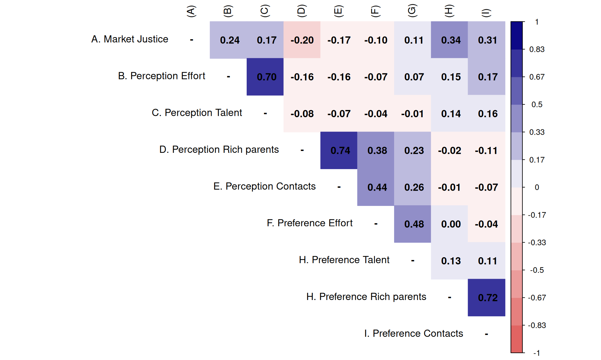
MIMIC Model: Education
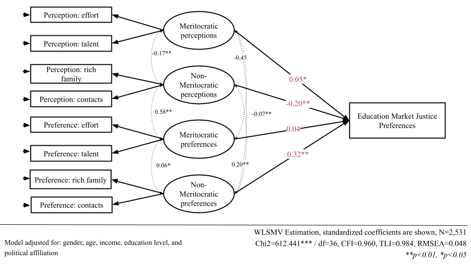